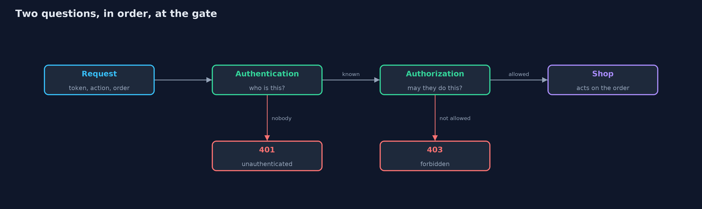
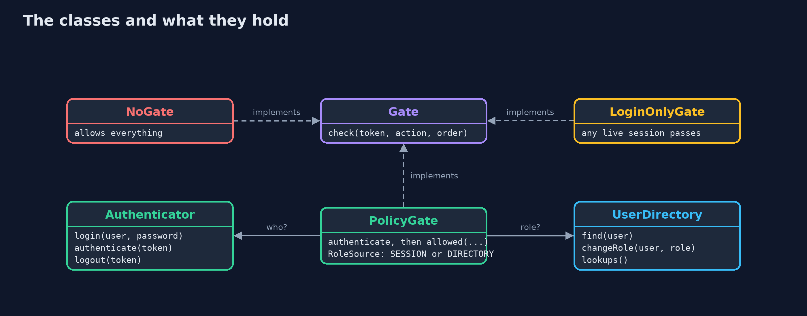
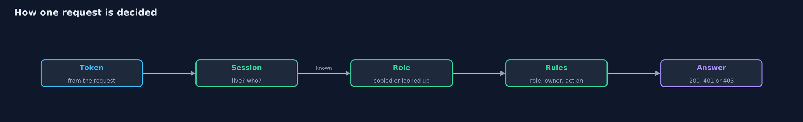
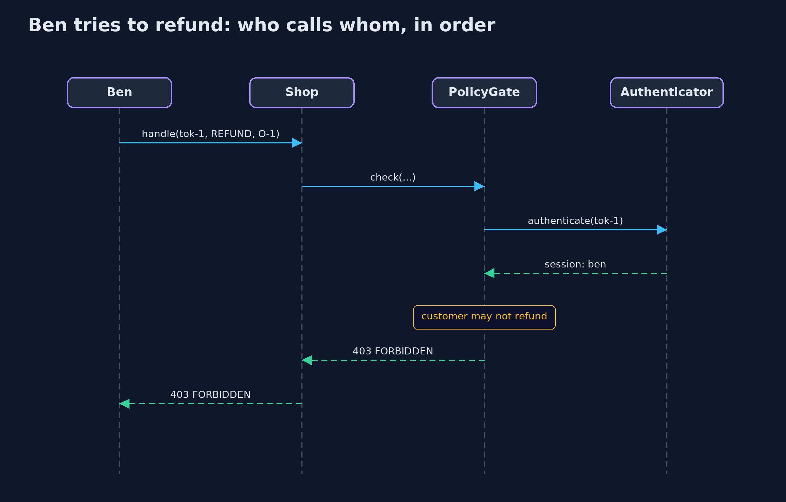

Authentication vs Authorization
src/main/java/com/jk/explore/security/auth/
├── Account.java A person who can sign in: a username and the role they were given
├── Action.java The things a request can ask to do to an order
├── AuthDemo.java Runs the online store story in five numbered acts and prints exact, repeatable results
├── Authenticator.java Authentication: finding out who is asking
├── Credentials.java Checks a username and password
├── Gate.java The check in front of every request: decides whether this token may do this action to this order
├── LoginOnlyGate.java Authentication only: anyone with a live session is let in, whatever they ask for
├── NoGate.java No checks at all: nobody is asked who they are, and everything is allowed
├── Order.java One order in the store: who owns it, what it is, and what was paid
├── PolicyGate.java Authentication, then authorization
├── Response.java What the shop sends back: a status and a short note on why
├── Role.java The job an account does in the store, which decides what it may do
├── Session.java Proof of a successful sign-in: a token, who it belongs to, the role they had then, and when it was issued
├── Shop.java The store's order endpoints
├── Status.java The answer to a request
├── Ticker.java A clock made of ticks, so sessions can expire without waiting for real time and every run is identical
└── UserDirectory.java Where the current role of every account is kept, and how many times it has been looked up
Authentication finds out who is asking; authorization decides what that person may do; and a shop that checks only the first lets every customer act as an administrator.
Two questions sound alike and are different. Authentication asks: who are you? It is proved with something only that person should have, such as a password. Authorization asks: what may you do? It is decided by rules about roles and ownership. A system that answers only the first question lets every signed-in user do everything. The two have their own answers too: 401 means "I do not know who you are", and 403 means "I know who you are, and you may not do this".
This project builds the online store's order endpoints three times. The first has no checks. The second checks who is asking and nothing else. The third checks who is asking and what that person may do.
The idea in everyday terms
Think of a hotel. At the front desk, the clerk checks your passport and gives you a key card: that is authentication. The key card then opens your room, the gym and the lift, but not the other guests' rooms and not the staff office: that is authorization. A hotel that gave every card access to every door would have checked your passport for nothing.
The scenario
An online store has three kinds of people. Customers, Ana and Ben, may view and cancel their own orders. Support staff, Sam, may view any order and issue refunds. An admin, Alex, may do everything. The store's first version asks nobody anything. The second adds a login, and the team believes the problem is solved. It is not, because a logged-in customer can still refund any order and read anyone's.
Run
./gradlew run
The demo tells the story in 5 acts, each printing exact numbers that the tests check:
| Act | What it shows |
|---|---|
| 1. The first version, with no checks | Nobody is asked who they are, so anyone can refund and view any order. |
| 2. Authentication: finding out who is asking | A wrong password is rejected, the right one gives a session token, and requests without a live token get a 401. |
| 3. Authenticated is not the same as authorized | With a login and nothing else, a customer can refund orders and read other people's orders. |
| 4. Authorization: what may this person do? | Roles and ownership decide: no token gets 401, a customer who may not gets 403, support and admins get what their role allows. |
| 5. The bill: sessions expire, and roles go stale | A session dies after 3 ticks; a role copied at login survives a demotion, and looking it up every time costs one lookup per request. |
Test
./gradlew test
21 tests in AuthenticatorTest, CredentialsTest, DemoRunsTest, GateTest, PolicyTest, StaleRoleTest. Every line the demo prints is checked against docs/expected-output.txt, and sessions use a simulated clock, so every run gives the same result.
What the simulation got right, and what it left out
Tokens here are numbered (tok-1, tok-2) so that the demo prints the same text every run;
real session tokens must be long and random, or they can be guessed. Time is simulated in
ticks. Passwords are stored as slow, salted hashes with a salt derived from the username so
the demo is repeatable; a real system uses a random salt for every account. Hashing and tokens
have their own projects later in the track.
Technologies and versions
| Technology | Version | Used for |
|---|---|---|
| Java | 25 | the code (toolchain set in build.gradle; Gradle finds or downloads the JDK) |
| Gradle | 9.2.1 (wrapper) | build and run, nothing to install |
| JUnit | 5.10.2 | the tests |
| videokit | repository tool (tools/videokit) |
the narrated video and animation: Piper en_US-amy-medium, speed 0.8, longer pauses (the amy-slow voice) |
Learning Material
| Document | What it is for |
|---|---|
| Problem statement | the situation and what the project must show |
| Prerequisites | what you need to know first |
| Authentication vs Authorization, explained | the acts in prose |
| Session guide | a one-hour lesson with exercises |
| Animated walkthrough | the acts step by step, narrated |
| Threat model | what is protected, who could harm it, and how, using STRIDE |
| Spec | what this project must be true of |
| Expected output | the golden demo output every test and every port checks against |
The idea in one picture
A request meets the gate: first authentication (who is this, 401 if nobody), then authorization (may this person do this, 403 if not), and only then the shop acts.

Where each piece sits
Gate has three implementations. PolicyGate uses the Authenticator for who and the UserDirectory for the current role.

How the data moves
The token becomes a person, the person becomes a role, and the role and the order give the answer.

Who calls whom, in order

Video
video/authentication-vs-authorization-explained.mp4 (with .m4a audio and .srt subtitles) is built by video/build_video.sh. Rendered media is not committed.
What it costs
- Every request pays for the checks. Looking up the session and applying the rules happens each time, so it must be fast and always available.
- Sessions expire. A short lifetime limits the damage from a stolen token, and costs real users a new login.
- Roles can go stale. A role copied into the session at login stays after a demotion, until the session ends. Looking it up each time is current, and costs a lookup per request.
- The gate must be on every endpoint. One endpoint that forgets to ask is open, however good the rules are.
When this is too much
A site with one shared, public page needs neither. As soon as there are accounts, authentication is needed. As soon as different accounts may do different things, or see different data, authorization is needed too, and it should be written as rules in one place and not as scattered checks.
Where you have already met this
- The 401 and 403 pages a browser shows, and the difference between them.
- A login form, a "remember me" box, and a "your session has expired" message.
- A "you do not have permission to view this page" message after you have signed in.
- Role names such as viewer, editor and admin in a cloud or office tool.
Where this sits
This project is the first one in identity, the second module of the beginner track.